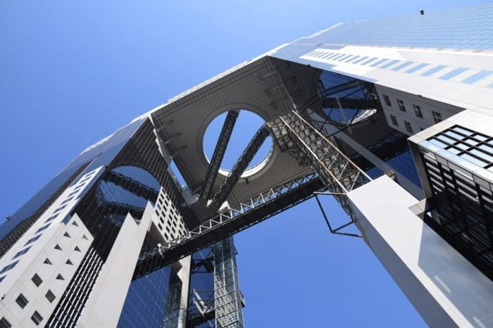
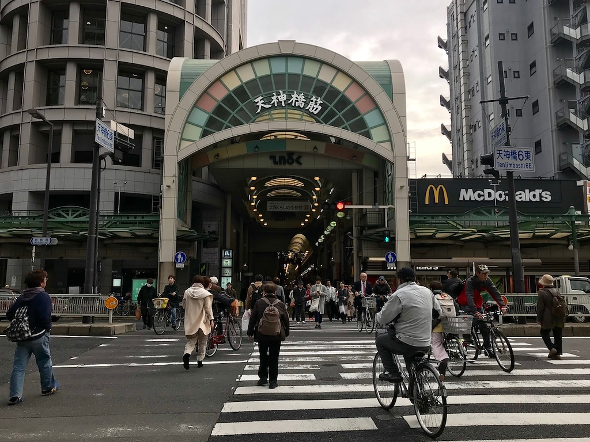
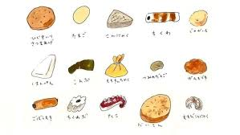
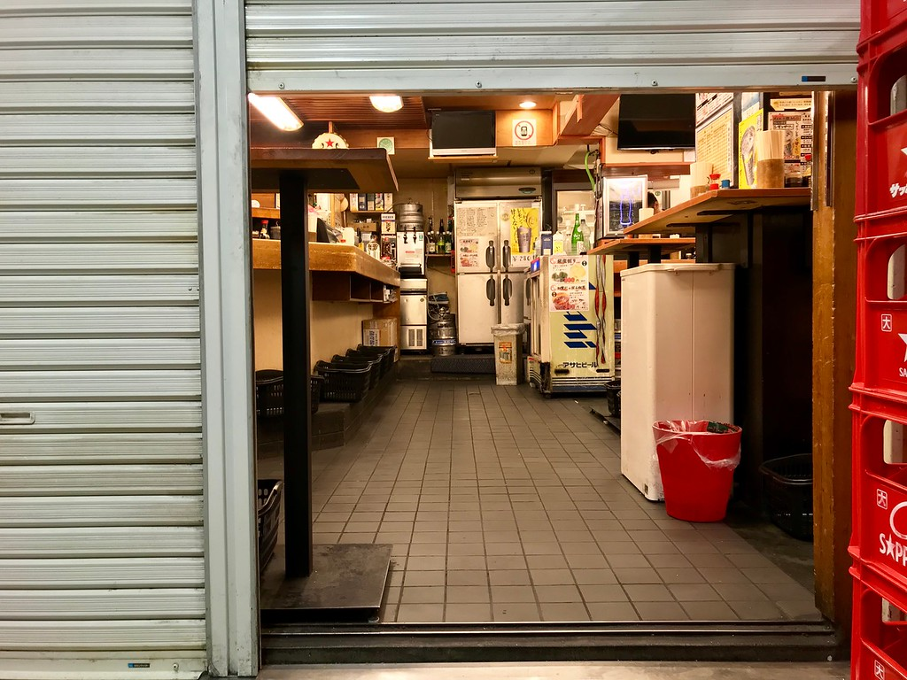
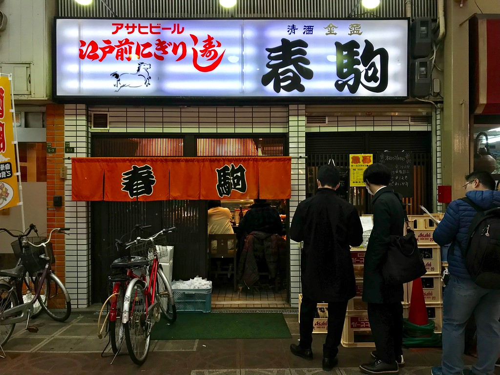

KITA
Tourist Spot
Take a Stroll in the Sky at the Umeda Sky Building
The Umeda Sky Building is about ten minutes away from JR Osaka Station on foot. The unique shape of this sightseeing spot attracts visitors from all over the world.
The top sections of two skyscrapers are connected by a circular corridor, and you can get up to the corridor through a direct elevator or the escalator. The open-air corridor, 173 meters above the ground, offers a 360-degree panoramic view.
At night, the floor underfoot lights up, making it appear as if you were walking on the Milky Way, creating a magical landscape together with the Osaka cityscape below.
Umeda Sky Building Address:
Osaka, Kita, Oyodonaka 1-1
Tenjinbashi-suji Shopping Street
Tenjinbashi-suji Shopping Street in Osaka’s Kita district stretches a whopping 2.5 kilometers long. More importantly, it’s home to over 600 shops and restaurants to browse. Its mix of old and screamingly new might prove to be sensory overload at times, but it’ll give you a great insight into one of Osaka’s oldest merchant areas.
Visiting a shopping arcade in Japan is usually a great insight into what makes a local neighborhood tick. One of the nation’s most famous is Tenjinbashi-suji Shopping Street, located in Tenma, one of Osaka’s oldest merchant areas. Purportedly one of the country’s longest covered shopping arcades, it stretches a whopping 2.5 kilometers long. It begins from around Tenjinbashi-suji Rokuchome Subway Station, and ends just before Tenjinbashi Bridge.
While parts of it are changing rapidly in response to the influx of tourists, there’s still plenty in the way of neighbourhood shops and restaurants, giving the street a significantly more local feel than its more commercial counterparts, such as Ebisubashi-suji or Shinsaibashi-suji Shopping streets. It’s not all tourist tat, but you’ll find anything and everything here, even the kitchen sink - clothes, futons, sundries, groceries, old-fashioned tea shops, books, phone accessories, charming cafes, tiny restaurants, and more.
Tenjinbashi-suji Shopping Street Address: Tenjinbashi, Kita-ku, Osaka-shi, 530-0041Food
Ginzaya
Want to drink and eat well on the cheap with Osakan locals? Head over to standing izakaya Ginzaya near Osaka Station to start off your night of bar-hopping. A draft beer is just JPY330, which bodes well for the evening ahead!
A tachinomi-ya, or standing-and-drinking bar, is one of the great subsets of the izakaya (traditional sake pub) genre of eateries in Japan. It’s exactly as the name sounds: you stand here drinking, and have delicious izakaya food to boot. Yes, you might be on your feet for a while, but it means that mingling with the locals is much easier since you’re all cozied up together at close quarters. And, if you’re at a popular place waiting in line, you probably won’t be waiting too long: turnover tends to be marginally faster at the standing bars.
Buried deep in the bowels of the Osaka Ekimae Daiichi Building, Ginzaya is a standing izakaya bar drawing salarymen by the dozen after the daily grind is over. It’s not hard to see why. For one thing, a draft beer (Sapporo) is just JPY330, and most alcoholic drinks on the menu average out at JPY200 to JPY400. It’s damned good value for money, and makes it easy to keep on quaffing!
Ginzaya Address:
B2 Osaka Ekimae Daiichi bldg., 1-3-1 Umeda, Kita-ku, Osaka-shi, 530-0001
Harukoma
With generous fish portions for their sushi at fantastically reasonable prices, it’s no wonder Harukoma in the Tenjinbashisuji Shopping Arcade sees lines out the door for lunch! Locals love this place and so will visitors.
Harukoma is one of those well-loved local Osakan institutions that has a permanent queue outside its doors. The line starts even before it opens for lunch! The sushi here isn’t the city’s best by any stretch of the imagination, but the cost-performance here is hard to beat.
Most pieces here are very decent, and even if they’re not top quality, they’re pretty damn satisfying for what you’re paying. At Harukoma, you can eat until you’re stuffed and not end up spending very much at all. And, warm, English-friendly service is a major plus point for any visitor to Osaka!
Harukoma Address:
5-5-2 Tenjinbashi, Kita-ku, Osaka-shi, 530-0041